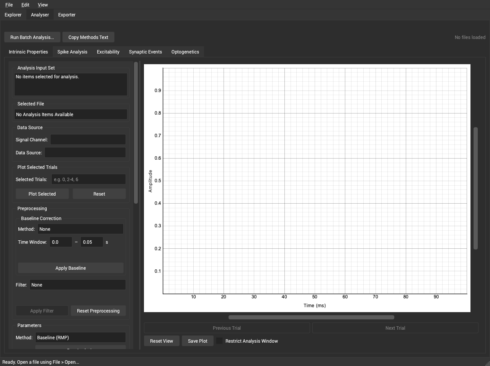

Synaptipy User Tutorial and Documentation
Synaptipy is a comprehensive electrophysiology visualization and analysis suite for patch-clamp and intracellular recording data. Built on Python and Qt6, it provides high-performance signal visualization, 14 dedicated analysis modules, a batch processing engine, and standards-compliant data export. This tutorial covers every feature of the application in detail, including the mathematical methods used under the hood.
Table of Contents
1. The Explorer Tab

The Explorer tab is the starting point for loading, browsing, and inspecting
electrophysiology data files. It supports all formats handled by the Neo library
(.abf, .smr, .smrx, .nex, .h5, and many more).
1.2 Plot Canvas
Multi-Channel Display — Each channel is plotted on a separate axis with linked X-axes for synchronized panning/zooming.
Hardware-Accelerated Rendering — PyQtGraph + OpenGL, up to 60 fps on large files.
Interactive Navigation — Scroll to zoom, drag to pan, toolbar for fine control.
1.3 Display Configuration Panel
Plot Mode
Overlay All + Average — All trials with average highlighted in bold.
Cycle Single Trial — One trial at a time with Prev/Next buttons.
Auto Downsample — Reduces data density automatically for very large files.
Manual Trial Averaging (Cycle mode) — Add Current Trial / Clear Average / Plot Selected Average.
Trial Selection — Trial Gap (skip N) and Start Trial index for sub-sampling.
Channel Visibility — Per-channel show/hide checkboxes.
Live Spike Detection — Real-time detection with configurable threshold (default −20 mV) and refractory period (default 2 ms). Spikes shown as red dots.
1.4 Toolbar
Prev / Next File — Navigate through all files in the directory.
Save Plot — Export the current view to PNG or PDF.
Reset View — Restore default zoom and position.
Lock Zoom — Preserve the viewport when switching files (useful for cross-file comparison of the same time window).
X Zoom Slider — Fine horizontal zoom control.
Prev / Next Trial (Cycle mode) — Navigate individual sweeps.
1.5 Y-Axis Controls
Lock Y Views — Link or unlink Y-axes across channels.
Global Y Controls (locked) — Single slider + scroll bar for all channels.
Per-Channel Y Controls (unlocked) — Independent slider + scroll bar per channel. All controls are debounced (50 ms) for smooth interaction.
1.6 Adding Data to the Analyser
Click “Add to Analysis Set” to send the loaded file to the Analyser tab’s queue.
2. Signal Preprocessing
A unified preprocessing panel is available in both the Explorer and Analyser tabs. Preprocessing applied in any analysis sub-tab propagates globally to all sub-tabs.
2.1 Digital Filters
All filters use zero-phase Butterworth IIR via scipy.signal.sosfiltfilt
(no phase distortion).
Filter |
Parameters |
Description |
|---|---|---|
Lowpass |
Cutoff (Hz), Order |
Remove high-frequency noise |
Highpass |
Cutoff (Hz), Order |
Remove slow baseline drift |
Bandpass |
Low & High cutoff (Hz), Order |
Pass a specific frequency band |
Notch |
Center (Hz), Q-factor |
Remove a narrow band (e.g., 50/60 Hz mains) — |
Comb |
Base freq (Hz), Q, N harmonics |
Cascaded notch filters removing a fundamental and all harmonics |
2.2 Baseline Subtraction Methods
Method |
Description |
|---|---|
Mode |
Subtract statistical mode (configurable decimal precision) |
Mean |
Subtract full-trace arithmetic mean |
Median |
Subtract full-trace median |
Linear Detrend |
Fit and remove a linear trend via |
Time Window |
Subtract mean of a user-specified region [t_start, t_end] |
2.3 Trace Quality Assessment
Computed on file load; shown as a traffic-light badge with tooltip:
SNR — signal power / noise power.
Baseline Drift — linear regression slope over the full trace (mV/s).
Line Noise — Welch PSD at 50/60 Hz.
Low-Frequency Variance — energy below a configurable cutoff.
3. The Analyser Tab

The central analysis engine. All 14 analysis sub-tabs are auto-built from registry metadata — parameter widgets, interactive plots, and result tables are generated automatically.
3.1 File and Data Source Selection
File Selector — All files in the analysis set.
Channel Selector — Choose the channel to analyze. Clamp mode (CC / VC) is auto-detected from channel units and controls which parameters appear.
Data Source — Average (mean of all trials), Trial 1, Trial 2, etc.
Drag-and-Drop File List — Drop files directly from the Explorer sidebar.
3.2 Analysis Sub-Tab Features
Each sub-tab provides:
Parameter Panel — Auto-generated spin boxes, combo boxes, and checkboxes. All include tooltips, unit suffixes, valid min/max ranges.
Interactive Plot
Draggable Regions — Color-coded overlays (blue = baseline, red = response, orange = peak, green = steady-state) bidirectionally linked to parameter boxes.
Interactive Event Markers — Click to remove; Ctrl+click on trace to add.
Draggable Threshold Line — Syncs with the threshold parameter.
Artifact Overlay — Semi-transparent green shading on detected artifact windows.
Fit Overlays — Exponential or regression curves overlaid on the trace.
Results Table — Parameter / Value pairs for all computed metrics.
Clamp-Mode Awareness — Parameters show/hide automatically (CC vs. VC).
3.4 Popup Windows
I-V Curve popup — Scatter + linear regression with R² annotation.
F-I Curve popup — Firing frequency vs. current with regression.
Phase Plane popup — dV/dt vs. V with threshold circles and max-dV/dt crosses.
ISI Plot popup — ISI number vs. ISI duration scatter.
3.5 Session Summary
Shows all accumulated results with Mean ± SD for numeric columns across cells.
4. Analysis Modules — Detailed Reference
4.1 Baseline / RMP Analysis
Registry name: rmp_analysis | Tab label: Baseline (RMP)
Computes resting membrane potential and baseline stability.
Parameters
Parameter |
Type |
Description |
|---|---|---|
Baseline Start |
float (s) |
Start of baseline window |
Baseline End |
float (s) |
End of baseline window |
Auto Detect |
bool |
Find most stable window automatically |
Window Duration |
float (s) |
Sliding window size (auto mode) |
Step Duration |
float (s) |
Sliding window step (auto mode) |
Methods
RMP = mean voltage in baseline window.
SD bounds = RMP ± std(baseline).
Drift = linear regression slope (mV/s).
Auto-detect:
find_stable_baseline()uses sliding-window variance minimization to locate the quietest trace segment.
Results
rmp_mv, rmp_std, rmp_mv_plus_sd, rmp_mv_minus_sd, rmp_drift,
rmp_duration
Visualization
Green draggable region; solid red h-line at RMP; dashed red h-lines at ±SD.
4.2 Spike Detection
Registry name: spike_detection | Tab label: Spike Detection
Automated detection and comprehensive parameterization of action potentials.
Parameters
Parameter |
Type |
Description |
|---|---|---|
Threshold |
float (mV) |
Detection threshold (default −20 mV) |
Refractory Period |
float (s) |
Minimum inter-spike interval (default 2 ms) |
Peak Search Window |
float (s) |
Post-threshold window to find peak |
dV/dt Threshold |
float (V/s) |
Derivative threshold for onset |
AHP Window |
float (s) |
Post-peak window for AHP minimum |
Onset Lookback |
float (s) |
Lookback for onset refinement |
Methods
Onset —
numpy.gradientcomputes dV/dt; onset where dV/dt >dvdt_threshold. More robust against baseline drift than amplitude thresholding.Per-spike features (vectorized NumPy):
Amplitude = V_peak − V_threshold
Half-width at 50% amplitude (linear interpolation)
Rise time 10–90%, Decay time 90–10% (sub-sample precision)
AHP depth = V_threshold − V_min_post (Savitzky-Golay smoothed)
AHP duration = repolarization to AHP recovery
ADP amplitude = local max after AHP trough
Max / Min dV/dt (V/s)
ISI statistics via
numpy.diff(spike_times).Multi-sweep:
analyze_multi_sweep_spikes()aggregates across all trials.
Results
spike_count, mean_freq_hz, spike_times, mean ± SD for: amplitude,
half_width, rise_time, decay_time, ahp_depth, ahp_duration,
adp_amplitude, max_dvdt, min_dvdt
Visualization
Red dashed threshold h-line; red dot markers at spike peaks.
4.3 Event Detection — Threshold Based
Registry name: event_detection_threshold | Tab label: Event Detection
Detects mEPSCs / mIPSCs using adaptive prominence-based thresholding. A method selector dropdown switches between all three event detection algorithms (sections 4.3 – 4.5).
Parameters
Parameter |
Type |
Description |
|---|---|---|
Threshold |
float (pA/mV) |
Minimum event amplitude |
Direction |
combo |
|
Refractory Period |
float (s) |
Minimum inter-event interval |
Rolling Baseline Window |
float (ms) |
Rolling median baseline window |
Reject Artifacts |
bool |
Gradient-based artifact rejection |
Artifact Slope Threshold |
float |
Gradient threshold for artifacts |
Artifact Padding |
float (ms) |
Dilation padding around artifacts |
Methods
Rolling median subtraction removes slow drift.
MAD noise estimate: σ = 1.4826 × MAD.
Adaptive prominence = max(threshold, 2σ).
scipy.signal.find_peakswith prominence, height, refractory distance, and min-width constraints. Events < 0.2 ms rejected as non-physiological.Artifact rejection: gradient thresholding + asymmetric binary dilation.
Results
event_count, frequency_hz, mean_amplitude, amplitude_sd,
event_times, event_indices, event_amplitudes
Visualization
Interactive scatter markers (click to remove; Ctrl+click to add); draggable threshold line; artifact overlay.
4.4 Event Detection — Template Match / Deconvolution
Registry name: event_detection_deconvolution | Tab label: Event (Template Match)
Detects events via a matched-filter approach using a bi-exponential template.
Parameters
Parameter |
Type |
Description |
|---|---|---|
τ Rise |
float (ms) |
Rise time constant |
τ Decay |
float (ms) |
Decay time constant |
Threshold (SD) |
float |
Z-score detection threshold |
Direction |
combo |
Event polarity |
Rolling Baseline Window |
float (ms) |
Baseline subtraction window |
Reject Artifacts |
bool |
Enable artifact rejection |
Min Event Distance |
float (ms) |
Minimum event separation |
Methods
Bi-exponential kernel: K(t) = exp(−t/τ_decay) − exp(−t/τ_rise), normalized.
FFT cross-correlation (matched filter) with the time-reversed template.
Z-score normalization by MAD; peaks above
threshold_sdare events.Local argmax refinement aligns detected times to true event peaks.
Results
Same as threshold method plus tau_rise_ms, tau_decay_ms.
Visualization
Same interactive markers / threshold line / artifact overlay.
4.5 Event Detection — Baseline Peak / Kinetics
Registry name: event_detection_baseline_peak | Tab label: Event (Baseline Peak)
Detects events by finding the most stable baseline and locating peaks above the noise floor.
Parameters
Parameter |
Type |
Description |
|---|---|---|
Direction |
combo |
Event polarity |
Auto Baseline |
bool |
Variance-minimization baseline search |
Threshold (SD Factor) |
float |
Multiples of noise SD |
Min Event Separation |
float (ms) |
Minimum inter-event gap |
Rolling Baseline Window |
float (ms) |
Rolling baseline size |
Baseline Window |
float (s) |
Manual window (if auto disabled) |
Baseline Step |
float (s) |
Manual step size |
Methods
Stable baseline via sliding-window variance minimization.
MAD noise estimate from baseline region.
Prominence-based peaks, min prominence = 0.5 × threshold.
Optional Butterworth lowpass pre-filter.
Biological minimum event width ≥ 0.2 ms.
Results
event_count, event_indices, event_times, event_amplitudes
4.6 Input Resistance (Rin)
Registry name: rin_analysis | Tab label: Input Resistance
Computes passive membrane input resistance from step protocols.
Parameters
Parameter |
Type |
Description |
|---|---|---|
Current Amplitude |
float (pA) |
CC mode step (hidden in VC) |
Voltage Step |
float (mV) |
VC mode step (hidden in CC) |
Auto Detect Pulse |
bool |
Derivative-based pulse edge detection |
Baseline Start / End |
float (s) |
Baseline window |
Response Start / End |
float (s) |
Steady-state window |
Methods
Ohm’s Law: Rin (MΩ) = |ΔV| / |ΔI|, where ΔV = V_ss − V_baseline.
Conductance: G (μS) = ΔI / ΔV.
Auto-detection uses the derivative of the stimulus channel to find step edges.
Results
rin_mohm, conductance_us, voltage_deflection_mv, current_injection_pa,
baseline_voltage_mv, steady_state_voltage_mv
Visualization
Blue region (baseline) + red region (response); blue h-line at baseline voltage; red h-line at steady-state voltage.
4.7 Tau (Membrane Time Constant)
Registry name: tau_analysis | Tab label: Tau (Time Constant)
Fits the membrane charging curve to extract the passive time constant.
Parameters
Parameter |
Type |
Description |
|---|---|---|
Stim Start Time |
float (s) |
Current step onset |
Fit Duration |
float (s) |
Duration of decay region to fit |
Tau Model |
combo |
|
Artifact Blanking |
float (ms) |
Exclude N ms after stimulus onset |
Tau Bound Min / Max |
float (ms) |
Bounds for τ optimizer |
Methods
Mono: V(t) = V_ss + (V_0 − V_ss) · exp(−t/τ), optimized via
scipy.optimize.curve_fit(bounded non-linear least squares).Bi: V(t) = V_ss + A_fast · exp(−t/τ_fast) + A_slow · exp(−t/τ_slow), separating fast capacitive from slower dendritic components.
Artifact blanking excludes the first N ms after stimulus onset.
Results
Mono: tau_ms. Bi: tau_fast_ms, tau_slow_ms, amp_fast, amp_slow.
Plus fit_time and fit_values for the overlay.
Visualization
Red exponential fit curve overlaid on the raw voltage trace.
4.8 I-V Curve
Registry name: iv_curve_analysis | Tab label: I-V Curve
Requires multiple trials (multi-sweep step protocol).
Parameters
Parameter |
Type |
Description |
|---|---|---|
Start Current |
float (pA) |
Current of sweep 0 |
Step Current |
float (pA) |
Current increment per sweep |
Baseline Start / End |
float (s) |
Baseline measurement window |
Response Start / End |
float (s) |
Steady-state measurement window |
Methods
Per sweep n: I_n = I_start + n × I_step; ΔV_n = mean(V_response) − mean(V_baseline).
Linear regression ΔV vs. ΔI: slope = Rin (MΩ), R² = goodness of fit.
Results
rin_aggregate_mohm, iv_intercept, iv_r_squared, delta_vs,
current_steps
Visualization
Popup I-V scatter + linear regression line with slope annotation and R².
4.9 Burst Analysis
Registry name: burst_analysis | Tab label: Burst
Identifies firing bursts based on inter-spike interval (ISI) criteria.
Parameters
Parameter |
Type |
Description |
|---|---|---|
Threshold |
float (mV) |
Spike detection threshold |
Max ISI (Start) |
float (s) |
Maximum ISI to start a burst |
Max ISI (End) |
float (s) |
Maximum ISI to continue a burst |
Min Spikes |
int |
Minimum spikes per burst |
Methods
Threshold-crossing spike detection.
ISI-based detector: burst starts when ISI ≤ max_isi_start; continues while ISI ≤ max_isi_end; groups with < min_spikes are discarded.
Results
burst_count, spikes_per_burst_avg, burst_duration_avg_s,
burst_freq_hz, bursts
Visualization
Red bracket lines spanning each burst, with spike markers inside each burst.
4.10 Capacitance
Registry name: capacitance_analysis | Tab label: Capacitance
Estimates whole-cell membrane capacitance from step protocols.
Parameters
Parameter |
Type |
Description |
|---|---|---|
Mode |
combo |
Current-Clamp or Voltage-Clamp |
Current Amplitude |
float (pA) |
Step size (CC mode) |
Voltage Step |
float (mV) |
Step size (VC mode) |
Baseline Start / End |
float (s) |
Baseline window |
Response Start / End |
float (s) |
Response window |
Methods
CC mode: C_m = τ / R_in. Tau and Rin computed first; τ(ms) / R(MΩ) → C(pF).
VC mode: C_m = Q / ΔV, where Q = ∫(I_transient − I_ss) dt via
scipy.integrate.trapezoid.
Results
capacitance_pf, tau_ms, rin_mohm, mode
4.11 Excitability (F-I Curve)
Registry name: excitability_analysis | Tab label: Excitability
Requires multiple trials (increasing current-step protocol).
Parameters
Parameter |
Type |
Description |
|---|---|---|
Threshold |
float (mV) |
Spike detection threshold |
Start Current |
float (pA) |
Current of sweep 0 |
Step Current |
float (pA) |
Current increment per sweep |
Refractory Period |
float (ms) |
Refractory period for spike detection |
Methods
Per-sweep spike detection with threshold + refractory filtering.
Rheobase = minimum current eliciting ≥ 1 spike.
F-I slope via linear regression: f = slope × I + b (Hz/pA).
Spike Frequency Adaptation per sweep = last ISI / first ISI.
Results
rheobase_pa, fi_slope, fi_r_squared, max_freq_hz, frequencies,
adaptation_ratios, current_steps
Visualization
Popup F-I scatter with regression line and slope annotation.
4.12 Optogenetic Synchronization
Registry name: optogenetic_sync | Tab label: Optogenetic Synchronization
Requires secondary TTL channel (dropdown to select the optical stimulus channel).
Parameters
Parameter |
Type |
Description |
|---|---|---|
TTL Threshold |
float (V) |
Binarize threshold for TTL channel |
Response Window |
float (ms) |
Post-stimulus spike search window |
Spike Threshold |
float (mV) |
AP detection threshold |
Methods
TTL edge detection: binarize →
numpy.difffor rising edges. Auto-threshold applied if specified value fails.Per-stimulus: detect first AP within response window.
Optical latency = mean(t_spike − t_onset).
Response probability = stimuli_with_spikes / total_stimuli.
Jitter = std(latencies).
Results
optical_latency_ms, response_probability, spike_jitter_ms,
stimulus_count, stimulus_onsets
Visualization
Spike markers on voltage trace; cyan dashed vertical lines at TTL onsets.
4.13 Phase Plane Analysis
Registry name: phase_plane_analysis | Tab label: Phase Plane
Visualizes AP dynamics in phase space (dV/dt vs. V).
Parameters
Parameter |
Type |
Description |
|---|---|---|
Sigma |
float (ms) |
Gaussian smoothing for dV/dt |
dV/dt Threshold |
float (V/s) |
Phase-plane crossing threshold |
Spike Threshold |
float (mV) |
Voltage threshold for spike detection |
Kink Slope |
float |
dV/dt value defining initiation “kink” |
Search Window |
float (ms) |
Lookback window for kink detection |
Methods
dV/dt via
numpy.gradient+scipy.ndimage.gaussian_filter1d.Phase-plane trajectory = V(t) vs. dV/dt(t).
Kink detection: first point where dV/dt crosses kink_slope in the lookback window before the spike peak — reflects axonal AP initiation.
Max dV/dt = peak upstroke velocity.
Results
voltage, dvdt arrays; threshold_indices, threshold_v,
threshold_dvdt, threshold_mean, max_dvdt
Visualization
Popup phase-plane plot: red circles at threshold, green crosses at max dV/dt. H-line on main trace at threshold voltage.
4.14 Spike Train Dynamics
Registry name: train_dynamics | Tab label: Spike Train Dynamics
Quantifies spike train regularity and temporal structure with ISI statistics.
Parameters
Parameter |
Type |
Description |
|---|---|---|
Spike Threshold |
float (mV) |
AP detection threshold |
Methods
ISI = numpy.diff(spike_times).
CV = σ_ISI / μ_ISI — global variability (0 = regular, 1 = Poisson).
CV₂ (Holt et al. 1996) = mean(2|ISI_(i+1) − ISI_i| / (ISI_(i+1) + ISI_i)) — local variability, insensitive to slow rate changes.
LV (Shinomoto et al. 2003) = mean(3(ISI_i − ISI_(i+1))² / (ISI_i + ISI_(i+1))²) — LV < 1 regular, LV ≈ 1 Poisson, LV > 1 bursty.
Results
spike_count, mean_isi_s, cv, cv2, lv, isi_numbers, isi_ms
Visualization
Spike markers on the voltage trace; popup ISI-number vs. ISI-duration scatter.
5. Batch Processing
5.1 Overview
The batch engine applies an analysis pipeline across many files automatically, producing a consolidated Pandas DataFrame result.
5.2 Opening the Batch Dialog
Click “Run Batch” in the Analyser tab toolbar. The dialog shows:
The file list from the analysis set.
A visual pipeline builder.
A progress bar and status label.
5.3 Building a Pipeline
Add Step — select from all 14 registered analyses.
Scope — Average, All Trials, First Trial, Specific Trial, or Channel Set.
Configure Parameters with auto-generated widgets.
Optionally prepend Preprocessing Steps (filter / baseline-subtract).
5.4 Running and Cancellation
A background worker thread processes each file sequentially with per-file progress updates. Click Cancel at any time via a thread-safe flag.
5.5 Output
DataFrame columns: file_name, file_path, channel, analysis, scope + all
analysis-specific result keys. Displayed in-dialog and exportable to CSV.
6. The Exporter Tab

6.1 NWB Export
Click “Export to NWB” to open the NWB Metadata Dialog (four tabs):
Session — description, UUID (auto-generated), start time, experimenter, lab, institution.
Subject — ID, species, age (ISO 8601), sex, genotype, weight.
Device — name, description, manufacturer.
Electrodes — description, location, filtering.
Produces a .nwb file with raw traces, metadata, and extracted features —
fully NWB-compliant.
6.2 Analysis Results Export
Table: Analysis Type, Source File, Data Source, Value, Timestamp, Details.
Select/deselect individual results with checkboxes.
Refresh Results syncs with the latest session accumulation.
Export to CSV (R, MATLAB, Python) or JSON (nested structure).
6.3 Plot Export
Every Explorer and Analyser sub-tab has a “Save Plot” button:
Format: PNG or PDF.
DPI setting for publication-quality figures.
7. Preferences and Customization
7.1 Preferences Dialog (Edit → Preferences)
Scroll Behavior — Natural, Inverted, or System.
Appearance — Light, Dark, or System theme with live preview.
7.2 Plot Customization Dialog (View → Plot Customization)
Average Trace — color, line width, opacity.
Single Trial — color, line width, opacity + “Force Opaque” toggle for faster rendering on large datasets.
Grid — grid line customization.
Each tab includes Reset to Defaults.
7.3 Analysis Defaults (Edit → Configure Analysis Defaults)
Registry parameter editor — modify default values for any analysis module. Changes persist across sessions.
Appendix A: Supported File Formats
Format |
Extensions |
|---|---|
Axon ABF |
|
Spike2 |
|
NeuroExplorer |
|
HDF5 / NWB |
|
Axon ATF |
|
Igor Pro |
|
And many more |
Appendix B: Architecture
Layer |
Responsibility |
Technologies |
|---|---|---|
Core |
Signal processing, analysis algorithms |
NumPy, SciPy, pure Python |
Application |
GUI, user interaction, visualization |
PySide6, PyQtGraph |
Infrastructure |
File I/O, format adapters |
Neo, PyNWB |
The Registry Pattern (AnalysisRegistry) provides plugin-style extensibility:
any script decorated with @AnalysisRegistry.register automatically becomes a new
analysis sub-tab in the GUI.